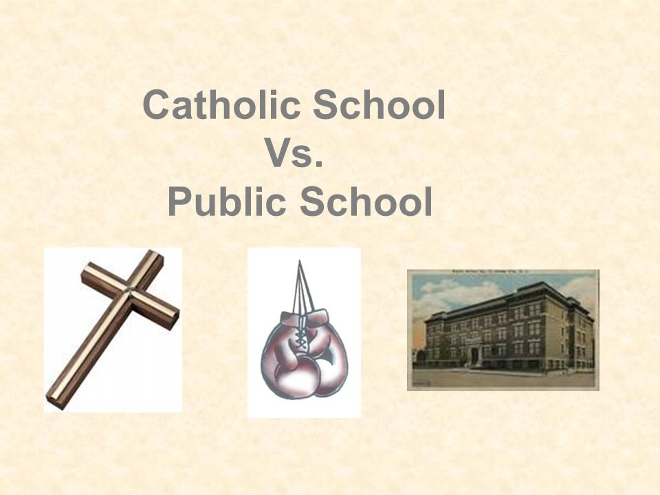

Jul-Oct, 2023
Business Data Analytics & Intelligence
with Python
Leveraging Python & cutting-edge tools (like Random Forest, Prophet, Causal Impact, Segmentation & etc),
my portfolio showcases deep dives into data. Analyze the past, predict the future & optimize business decisions.

Use Matching to understand whether catholic shools are better than others (from a standardized test score view)

Use Matching to understand whether Remote workers are better than Office workers (career satisfaction)
On October 21, 2020, PayPal made a bold move by allowing its users to buy, sell, and hold Bitcoin directly within their accounts.
This raised a crucial question: how did this impact Bitcoin prices?
In September 2015, a scandal broke out in the automotive industry. It was found out that Volkswagen companies were misleading customers. The company declared that the cars were far less polluting than what they actually were.
It is natural that Volkswagen lost market value, but the question is how much?